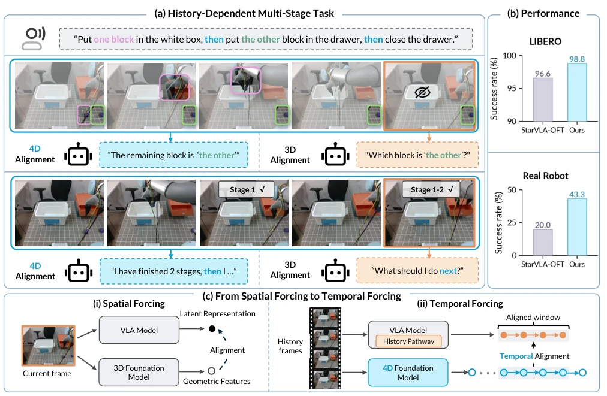
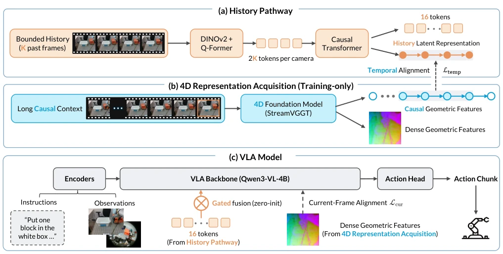
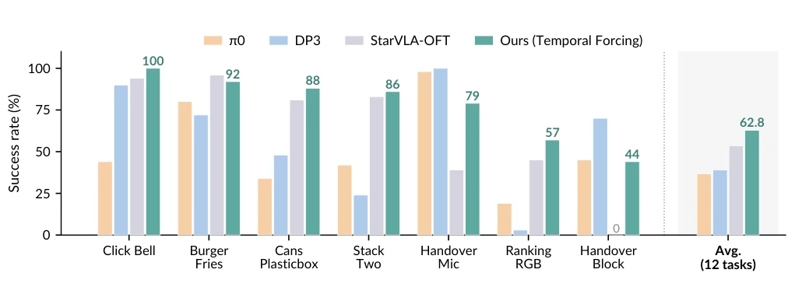
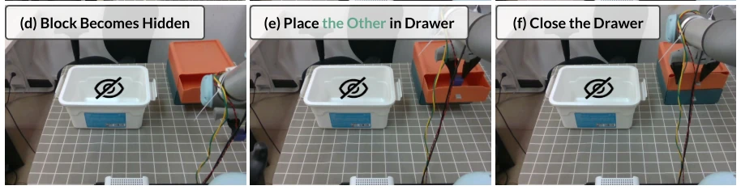
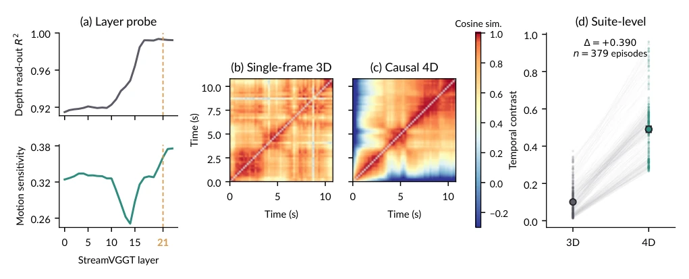
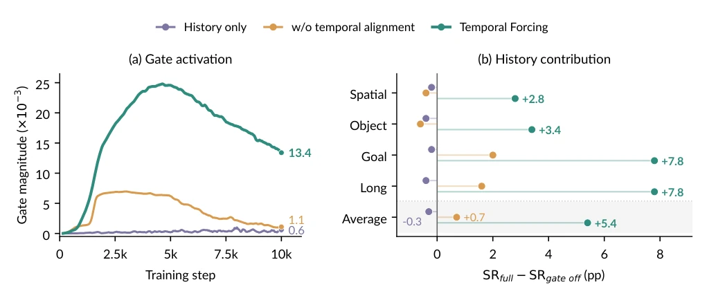
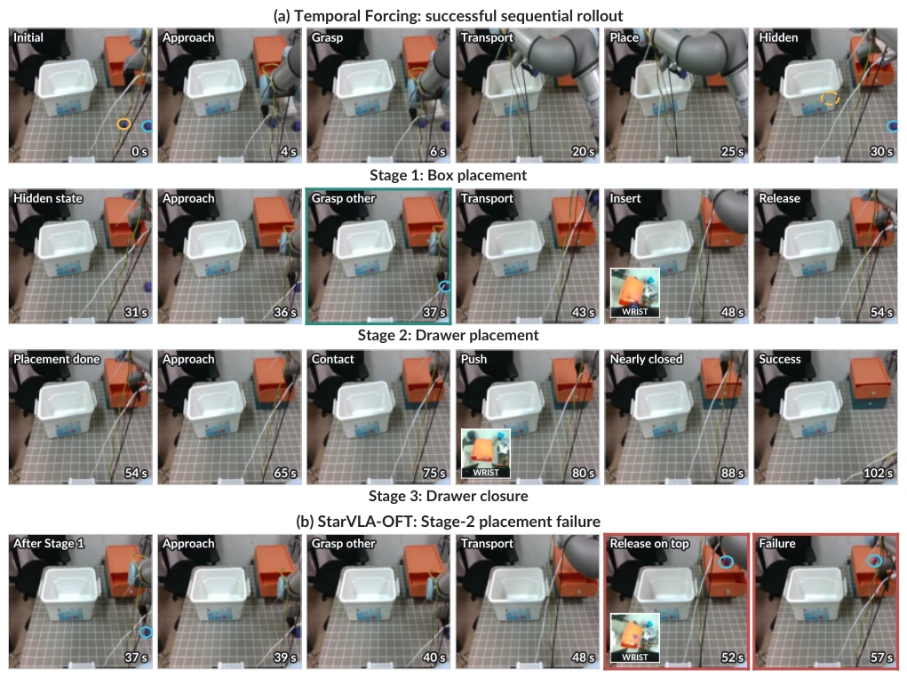

This paper equips VLA models with a "time filter". Previously, Spatial Forcing [Li et al. 2025a] only aligned the 3D geometry of the current frame, failing when encountering occlusion or long-range tasks, such as not knowing how many blocks remain if one cannot see the blocks inside the box. The authors developed Temporal Forcing, using a pretrained 4D model (StreamVGGT) as a teacher to teach the VLA to remember historical states. During training, alignment is performed; during inference, the teacher is discarded, keeping only a lightweight history pathway. The results are indeed impressive, achieving 98.8% on LIBERO, doubling the success rate of physical tasks. However, this approach is essentially "distillation," and the performance ceiling depends on the quality of the 4D model. If the 4D model itself has biases, won't the VLA learn even more erroneously? Moreover, with a fixed history window, what happens when encountering ultra-long-range tasks? It counts as adding a brick to long-range planning, but it is not yet at the stage of building a skyscraper.
研究动机Motivation
现有 VLA 方法（如 Spatial Forcing [Li et al. 2025a]）主要对齐当前帧的 3D 几何特征。这导致两个致命伤：一是长程任务中，当前帧无法反映历史状态演变，比如物体被遮挡后无法区分“哪个是另一个”；二是视觉相似状态下的观测别名问题（observation aliasing），模型无法通过单帧判断任务进度。例如，把块放入不透明盒子后，后续操作依赖之前的放置历史，但 3D 几何只捕捉当前可见状态。单纯输入历史帧（如 HAMLET [Koo et al. 2025]）不够，因为缺乏对历史表征演变的显式监督。因此，需要一种能捕捉场景随时间演变的 4D 表示对齐方法。
Existing VLA methods (such as Spatial Forcing [Li et al. 2025a]) primarily align the 3D geometric features of the current frame. This leads to two fatal flaws: first, in long-range tasks, the current frame cannot reflect the evolution of historical states, such as being unable to distinguish "which is which" after an object is occluded; second, the observation aliasing problem under visually similar states, where the model cannot determine task progress through a single frame. For example, after placing blocks into an opaque box, subsequent operations depend on previous placement history, but 3D geometry only captures the currently visible state. Simply inputting historical frames (such as HAMLET [Koo et al. 2025]) is insufficient because it lacks explicit supervision on the evolution of historical representations. Therefore, a 4D representation alignment method capable of capturing scene evolution over time is needed.
方法Method
整体流程分为训练和推理两阶段。训练时，首先通过 History Pathway 压缩 K 个过去帧：用 DINOv2 编码 + Q-Former 生成 gist tokens，经因果 Transformer 聚合为历史隐表征，通过零初始化门控交叉注意力注入 VLA Backbone，确保初始化不影响基线。同时，利用预训练 4D 基础模型 StreamVGGT 离线提取因果几何特征（Causal Geometric Features）和稠密几何特征（Dense Geometric Features）。对齐目标包含两部分：Temporal Alignment 监督历史表征随时间的变化，包含状态匹配、相邻帧变化匹配及最近帧读取项，确保历史编码包含动态信息；Current-Frame Alignment 将当前帧图像 token 对齐到 4D 模型的稠密特征，锚定当前上下文。推理时，移除 4D 模型及对齐头，仅保留 History Pathway 和 Base VLA，确保延迟可控且无需额外 3D 输入。
The overall process is divided into two stages: training and inference. During training, first compress K past frames through the History Pathway: encode using DINOv2 + Q-Former to generate gist tokens, aggregate into historical latent representations via a causal Transformer, inject into the VLA Backbone via zero-initialized gated cross-attention to ensure initialization does not affect the baseline. Meanwhile, utilize the pretrained 4D foundation model StreamVGGT to offline extract Causal Geometric Features and Dense Geometric Features. The alignment objectives include two parts: Temporal Alignment supervises the change of historical representations over time, including state matching, adjacent frame change matching, and recent frame read items, ensuring the historical encoding contains dynamic information; Current-Frame Alignment aligns current frame image tokens to the 4D model's dense features, anchoring the current context. During inference, remove the 4D model and alignment head, retaining only the History Pathway and Base VLA to ensure controllable latency and no need for additional 3D input.
On the LIBERO benchmark, Temporal Forcing achieves an average success rate of 98.8%, outperforming the baseline by 2.2 points, with the Long set showing the most significant improvement. On RoboTwin 2.0 dual-arm tasks, the average success rate increased from 53.5% to 62.8%. In physical hidden placement tasks (UR3 robotic arm), the overall task success rate increased from 20.0% to 43.3%, proving the model can utilize history to infer invisible states. Ablation studies show that adding only the history pathway is ineffective (noise interference), adding only 4D targets without a history pathway leads to performance degradation in the Long set, and Temporal Alignment must be combined to activate historical representations. Compared to 3D targets, 4D targets show significant advantages in long-range tasks.
其他图片Other Figures

Figure 1: (a) A physical multi-stage task with two history-dependent decisions. Once one of two identical blocks is placed in the opaque box and becomes invisible, the model must use the earlier placement to resolve “the other” and track completed steps to decide what comes next. Colored contours are visualization-only and track the two blocks across frames; the crossed-eye icon marks the block hidden inside the box. Framewise 3D alignment captures only the visible geometry, whereas 4D alignment represents how the scene evolves over time. (b) Success rates on LIBERO and the physical task. (c) Spatial Forcing aligns a current-frame VLA representation with features from a pretrained 3D model, whereas Temporal Forcing equips the VLA model with a history pathway and aligns its history latent r

Figure 2: Overview of Temporal Forcing. (a) The History Pathway compresses K past frames per camera into gist tokens and summarizes them into the History Latent Representation and 16 tokens (Sec. 3.3). (b) 4D Representation Acquisition uses a pretrained 4D foundation model to extract Causal Geometric Features and Dense Geometric Features, visualized here as their top three PCA components (Sec. 3.2). (c) Temporal Alignment aligns the History Latent Representation with the Causal Geometric Features, while Current-Frame Alignment aligns current-frame image tokens with the Dense Geometric Features (Sec. 3.4). Gated fusion (zero-init) injects the 16 tokens without extending the backbone sequence (Sec. 3.3). The pretrained 4D foundation model and all alignment heads are training-only.

Figure 3: RoboTwin 2.0 results (success rate %) for π0 (Black et al. 2024), DP3 (Ze et al. 2024), the base model, and ours: seven representative tasks and the macro-average over all twelve evaluated tasks.

Figure 4: Real-robot hidden-placement task on the UR3. (a) Initial setup: an opaque storage box, a drawer, and two identical blocks. (b–f) Stages of one sequential trial; once a block is inside the box it is no longer visible from any camera.

Figure 5: Representation probes for StreamVGGT features. (a) Held-out depth read-out and motion sensitivity across layers; layer 21 is used for alignment. (b–c) Pairwise cosine similarity of single-frame 3D and causal 4D targets from the same trajectory; diagonals are masked. (d) Temporal contrast on LIBERO-Long.

Figure 6: History utilization in the controlled configurations from Table 2 of the main text. (a) Injection-gate magnitude during training. (b) Change in success rate when the gate is closed at inference, reported by LIBERO suite and on average.

Figure 7: Qualitative real-robot rollouts. (a) Temporal Forcing completes box placement, drawer placement, and drawer closure in one uninterrupted execution. (b) StarVLA-OFT fails during drawer placement by releasing the block on top of the drawer. Green and red borders mark the key decision and failure states. Circles distinguish the two blocks, and wrist-camera insets show manipulation details occluded in the main view. Annotations are visualization-only.